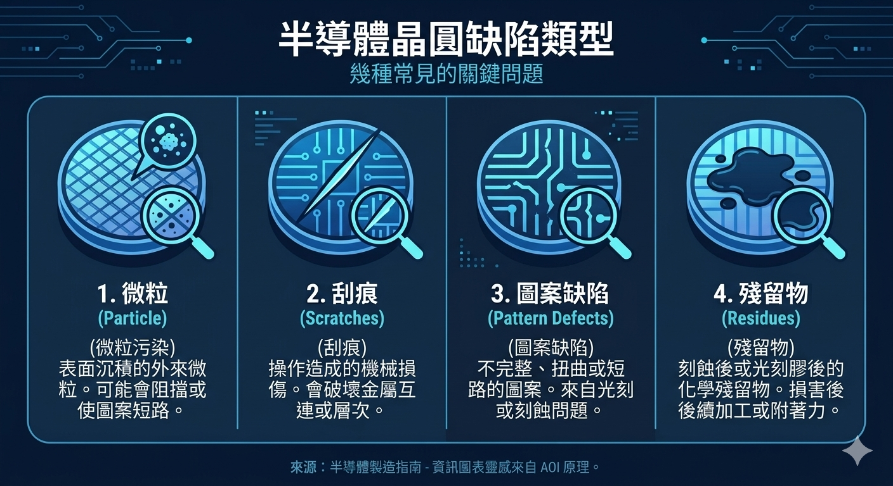
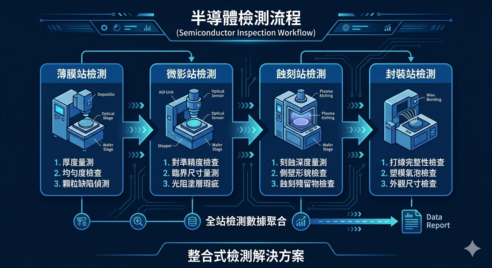

為什麼半導體製程對檢測特別嚴苛
半導體製造要在矽晶圓上疊出數十層、線寬僅奈米等級的電路結構。任何一層出現微粒、刮痕或圖案偏移,都可能讓整顆晶片失效。加上一片晶圓要經過上百道製程,越後段發現缺陷,報廢成本越高。
因此半導體廠對檢測的要求近乎「零容忍」:不只要找得到缺陷,還要在製程早期就攔截,避免不良繼續往下流。這對檢測的解析度、速度與判別準確度都是極大挑戰。
常見的製程缺陷
在晶圓與封裝檢測中,常見需要辨識的缺陷包括:
- 微粒(Particle):附著在晶圓表面的微小顆粒,可能造成短路或斷路。
- 刮痕(Scratch):搬運或研磨過程造成的表面損傷。
- 圖案缺陷(Pattern Defect):微影或蝕刻造成的線路缺損、橋接或偏移。
- 殘留物(Residue):清洗不完全留下的化學殘留。

傳統檢測的瓶頸與 AI 的價值
傳統的自動光學檢測(AOI)與規則式演算法,對規則明確、對比清晰的缺陷有效。但半導體缺陷往往極小、對比低,且晶圓上正常的電路圖案本身就很複雜,規則式方法容易把正常結構誤判成缺陷,造成過殺(overkill)。
導入 AI 深度學習後,系統能從大量影像中學到「正常圖案長什麼樣」,再把偏離正常的區域標為可疑缺陷。這種做法對複雜圖案與新型缺陷的辨識力明顯優於固定規則,能在維持高偵測率的同時,降低過殺率。
半導體檢測的難處不只是「找到缺陷」,而是要在極複雜的正常圖案中,把真正的缺陷和無害的圖案變異分開。這正是 AI 學習式檢測的強項。
檢測導入的評估重點
導入前建議先釐清幾件事:
- 缺陷樣本:是否有足量、已標註的缺陷影像可供訓練?這往往是成敗關鍵。
- 解析度需求:要偵測的最小缺陷尺寸,決定鏡頭、光源與放大倍率。
- 產線節拍:每片晶圓的檢測時間上限,影響硬體與演算法設計。
- 資料串接:檢測結果要如何寫進 MES 與良率分析系統,支援後續根因分析。

預期效益
導入 AI 視覺檢測後,半導體產線能得到幾項具體效益:
- 早期攔截:在缺陷往下流之前就發現,降低報廢與重工成本。
- 降低過殺:減少把正常品誤判為不良,提升有效產出。
- 良率可視化:每片晶圓的缺陷分布可追蹤,方便追查製程根因。
如果你的產線正面臨過殺率偏高,或現有檢測抓不到微小缺陷的困擾,歡迎與我們聯絡,一起評估最適合的半導體製程檢測方案。